This playlist includes mellow songs that are perefct for a chill vibe. They are great songs to sing along and relax to. I like to enjoy this playlist after a long day of work listening to it alone or with friends. This playlist is full of great indie beats and is not your average mainstream playlist.
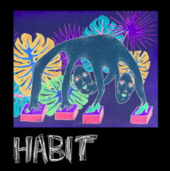
“Habit” depicts feelings of uncertainty towards the reciprocity of a love interest’s feelings. Vulnerable to rejection, self-conscious thought creates doubt in the mind, leading to a powerful sense of inner confusion and strong focus on the catastrophizing the outcome. A ‘habit’ is defined as a subconscious, routine behavior that is repeated frequently. The use of the word “habit” in this track could represent the familiarity, order, and routine that Still Woozy (aka. Sven) could find through a close relationship, that might serve to offset some of the uncertainty and chaos of his life.
“Remember Me” is a song that was released in October 2018. The song talks about remembering a past lover, and recovering all those memories that they had together.
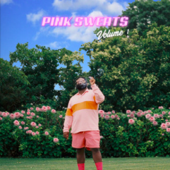
“Caged Bird” is a 2017 single by Myles Cameron for his project “everwanted.” It is currently his most popular song, with over 3 million streams on Spotify. The song references Maya Angelou’s autobiography “I Know Why the Caged Bird Sings.”
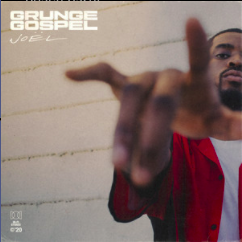
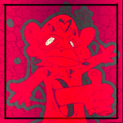
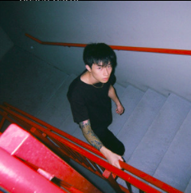
“like i need u” follows the theme of unrequited love and one-night-stands. Keshi conveys his frustrations through his alluring lyrics and lush production.
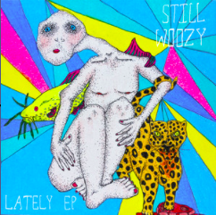
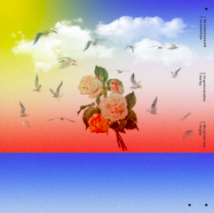
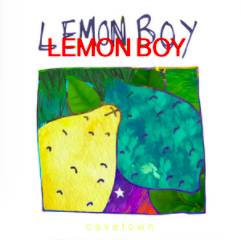
“Fool” is about a boy who is in a toxic relationship with a person who doesn’t love him back. The calming tune combines Cavetown’s smooth vocals, melancholic, and nostalgic lyrics with a feeling of youthful love, but the lyrics tell a different story. By the end of the song, he passes his stages of grief from depression to acceptance. He fully takes in the fact that the relationship was toxic and eventually becomes more aware how much it was hurting him.
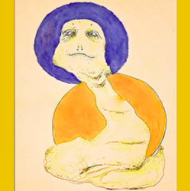
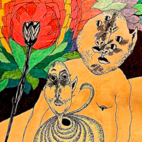
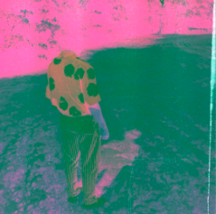
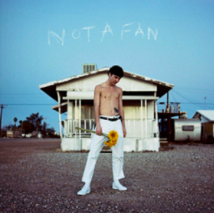
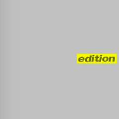
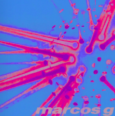